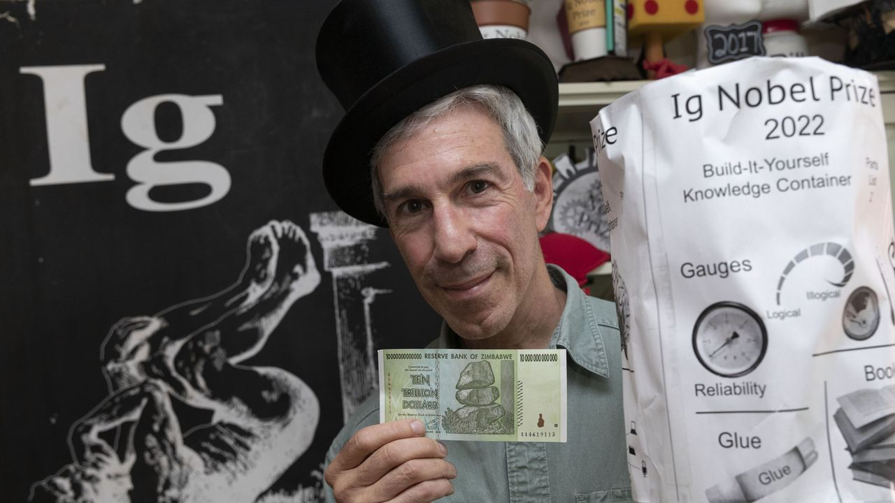

Wanneer vertellen roddelaars best de waarheid? Waarom hebben vaak niet de meest getalenteerde mensen succes? En kloppen harten echt synchroon op een leuke blind date? Dat zijn maar enkele voorbeelden van onderzoeksprojecten die dit jaar een Ig Nobelprijs winnen, de satirische wetenschapsprijzen voor onderzoek dat je eerst doet lachen en dan doet nadenken.
al meer dan 30 jaar steken de Ig Nobelprijzen de echte Nobelprijzen de loef af. Kort voor die prestigieuze wetenschapsprijzen worden uitgereikt, pakken de Ig Nobelprijzen uit met een stevige knipoog uit met bekroningen voor wetenschappelijk onderzoek "dat je eerst doet lachen en dan doet nadenken".
10 onderzoeksteams - of beter: hun grappige onderzoeksprojecten - kregen dit jaar een bekroning. De award moeten ze zoals steeds zelf nog in elkaar zetten. Daarnaast krijgen ze een (uiteraard waardeloos) briefje van 10 biljoen Zimbabwaanse dollar.

Geniet even mee, want dit zijn de winnaars. Dit jaar zitten er geen Belgen bij!
- Toegepaste cardiologie: Onderzoekers uit onder meer Tsjechië en Nederland zochten en vonden het - geef toe: hoogst romantische - bewijs dat de harten van mensen die elkaar voor het eerst zien op een blind date en die zich tot elkaar aangetrokken voelen effectief synchroon beginnen te kloppen.
- Literatuur: "Waarom zijn juridische documenten soms zo slecht te begrijpen?", was de vraag die wetenschappers uit Canada, de VS, het VK en Australië zich afvroegen. Conclusie: dat ligt blijkbaar vooral aan het feit dat ze simpelweg slecht geschreven zijn en het komt dus niet doordat ze zulke moeilijke concepten gebruiken.
- Biologie: In Brazilië en Colombia bogen biologen zich over de vraag of en hoe constipatie impact heeft bij parende schorpioenen. Het gaat dan specifiek over schorpioenen die als verdedigingsmechanisme hun staart (en in de praktijk ook de laatste delen van hun lijf) hebben afgestoten. Omdat daardoor ook een deel van hun spijsverteringsstelsel weg is, raken ze verstopt. Maar kunnen ze zich dan nog succesvol voortplanten?
- Geneeskunde: Een ijsje op tijd en stond kan altijd helpen, moeten Poolse onderzoekers gedacht hebben - en terecht. Zij achterhaalden namelijk dat kankerpatiënten die bepaalde vormen van zware chemotherapie moeten volgen minder schadelijke neveneffecten ondervinden wanneer bij een deel van die therapie roomijs wordt gegeven.